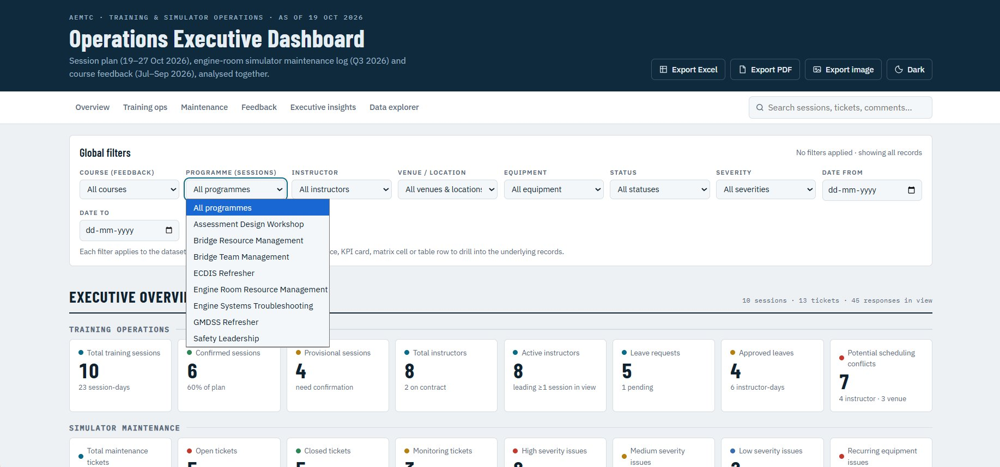
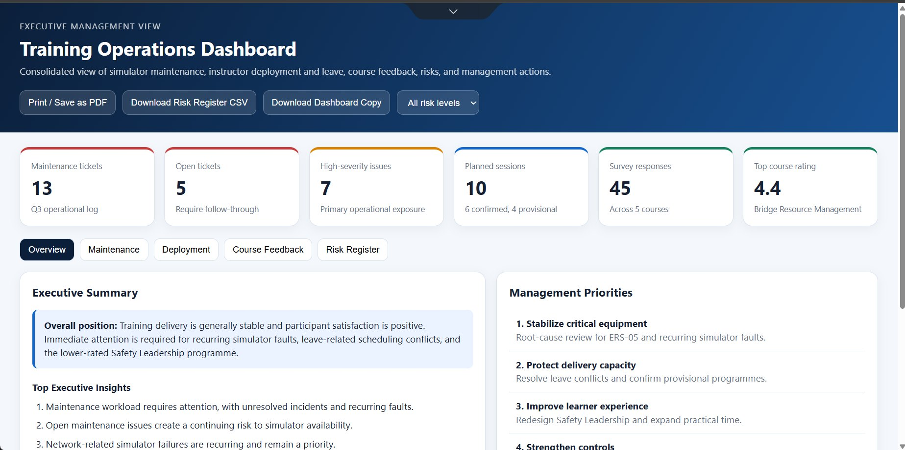
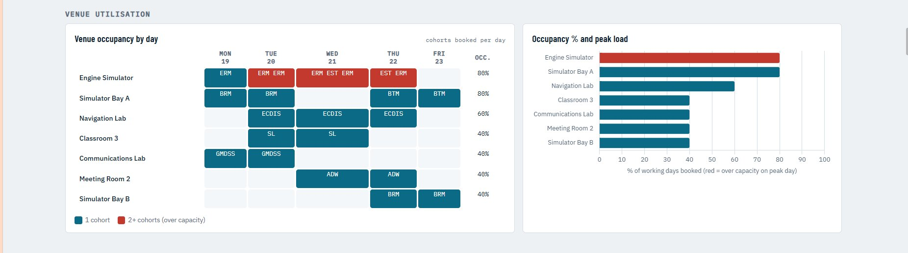
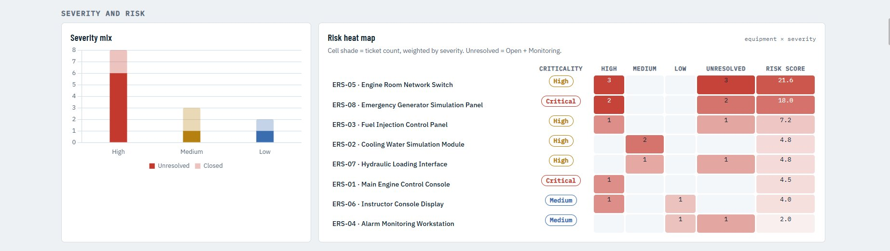
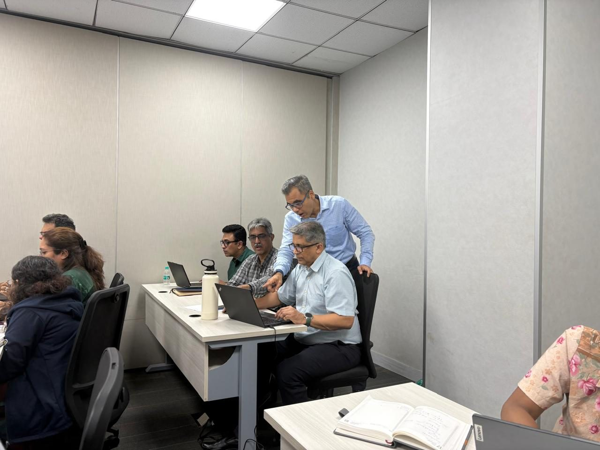
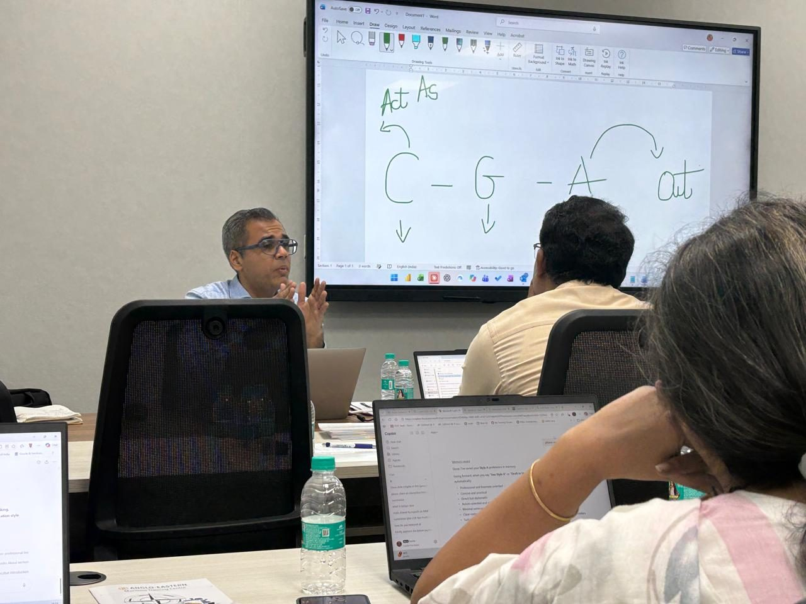
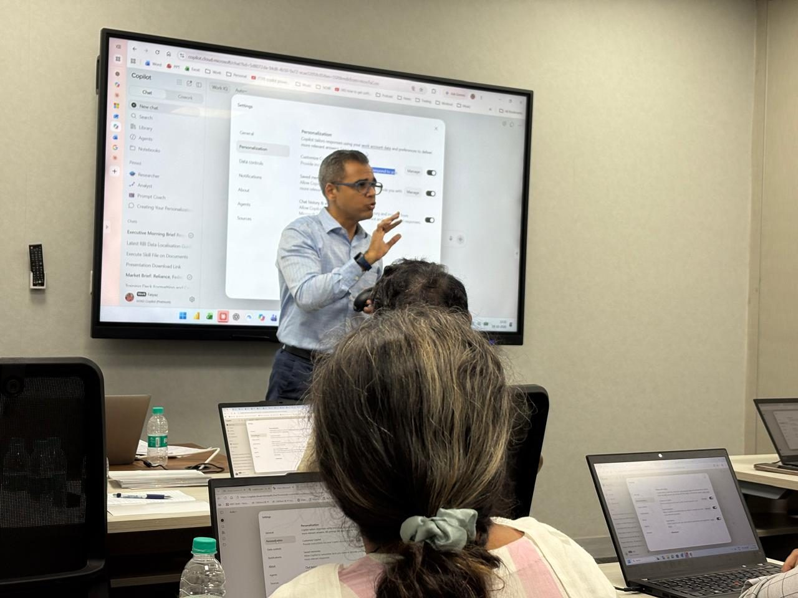
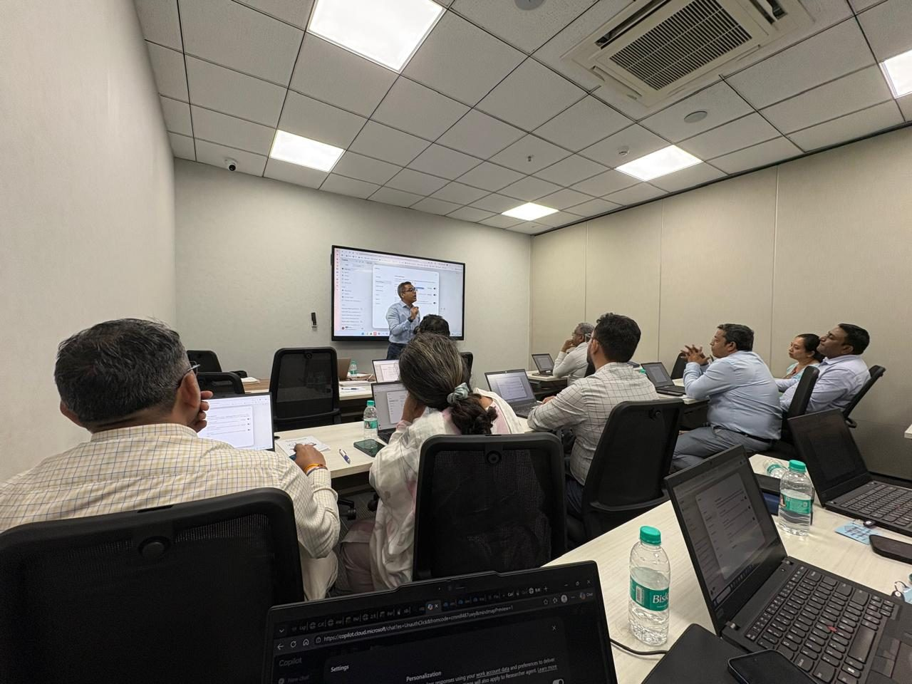

AI training in action: Microsoft Copilot and Claude for Anglo-Eastern Ship Management India
What happens when AI moves beyond theory and becomes practical? A 100% hands-on program on two AI platforms, from working with real business data to creating dashboards.
86-second highlights with music. It also works with the sound off.
Anglo-Eastern Ship Management India
Anglo-Eastern is a leading global provider of independent ship management, with more than 700 vessels under full technical management and over 39,000 seafarers. The program ran at the Anglo-Eastern Maritime Training Centre.
From understanding AI to applying it
- The goal was simple: move beyond understanding AI to discovering how it can be applied to everyday business tasks.
- Two AI platforms were in scope, so the team needed to see how Copilot and Claude can complement each other, not compete.
- Watching demonstrations was never going to be enough. The learning had to happen on real data and real files.
100% practical. Real data. Real files. Real learning.
Not just watching demonstrations. Participants worked hands-on with their own files and explored AI-powered workflows.
Two platforms, side by side
Microsoft Copilot and Claude, and how each one fits different kinds of work.
Their own files
Exercises ran on real business data rather than generic examples.
Learning by doing
Experimentation and one-to-one guidance at participants' laptops.
From data to dashboards
Analysis turned into dashboards using the skills learned in the session.
Two AI platforms. New possibilities. Smarter ways of working.
How both platforms complement each other to solve business problems, analyse information and improve productivity.
Structured prompting
- A simple framework for writing prompts that get usable answers
- Giving the AI the right context and goal
Personalising Copilot
- Setting up Copilot to respond the way you work
- Using saved preferences and memory well
Analysing information
- Working with real business data and files
- Turning findings into summaries and insights
Dashboards & interactive tools
- Building interactive dashboards with Claude
- Filters, drill-downs and management views
Turning data into insights
Dashboards created during the program, bringing training, maintenance and feedback data into one management view.




Inside the training room




Building AI skills. Enabling smarter workflows.
- Two platforms, one way of workingA clear picture of where Copilot and Claude each fit, and how they work together.
- Learning by doingSkills practised on participants' own files, not watched in a demo.
- Turning data into insightsFrom raw business data to dashboards and management views.
Let's design AI training around your teams' real work
Faiyaz M Khairaz, Microsoft Certified Trainer and Freelance AI Trainer with 22+ years in corporate training. Start with a free 30-minute consultation, then a 100% customised training proposal built on your own data, under NDA.